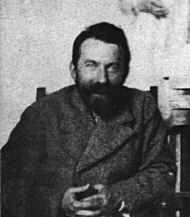

Giacomo Balla nasce a Torino nel 1871; studia violino e comincia molto presto a disegnare e a dipingere. Intorno al 1891 frequenta per alcuni mesi l'Accademia Albertina. Al 1894 risale il primo dipinto conosciuto, un autoritratto. Nel 1895 si trasferisce a Roma con la madre, dopo una breve parentesi parigina.Nella capitale inizia a esporre regolarmente nell'ambito mostre degli "Amatori e Scultori".
E' maestro di Gino Severini e Umberto Boccioni e diviene figura guida nell'ambiente artistico romano. La sua pittura è inizialmente caratterizzata da una forte ispirazione sociale e da una tecnica divisionista.
Nel 1910, quando aderisce al futurismo sottoscrivendo il "Manifesto dei pittori futuristi", ha già una vasta notorietà. Nel 1913 mette all'asta tutte le sue opere figurative e annuncia: "Balla è morto. Qui si vendono le opere del fu Balla". Nel 1915 firma il manifesto della "Ricostruzione futurista dell'universo".
Si afferma come il capofila del futurismo romano influenzando dopo il '20 la seconda ondata del movimento. Negli anni '20 il suo lavoro è caratterizzato da una fantasiosa stilizzazione di motivi naturalistici, da un cromatismo intenso e violento, sfumato e iridescente.
Nel 1918 si ha una sua personale a Roma per inaugurare l'attività della Casa d'Arte Bragaglia. Nel 1928 espone agli "Amatori e Cultori" con una personale in cui emergono i segni di un rinnovato interesse per la figurazione.
Da questo momento si rivolge sempre più ai temi della vita quotidiana, al ritratto, al paesaggio, che furono quelli della sua formazione. Tempio di questa ricerca è la casa-studio di via Oslavia, dove lavora con le due figlie pittrici, Elica e Luce. Muore nel 1958 a Roma.